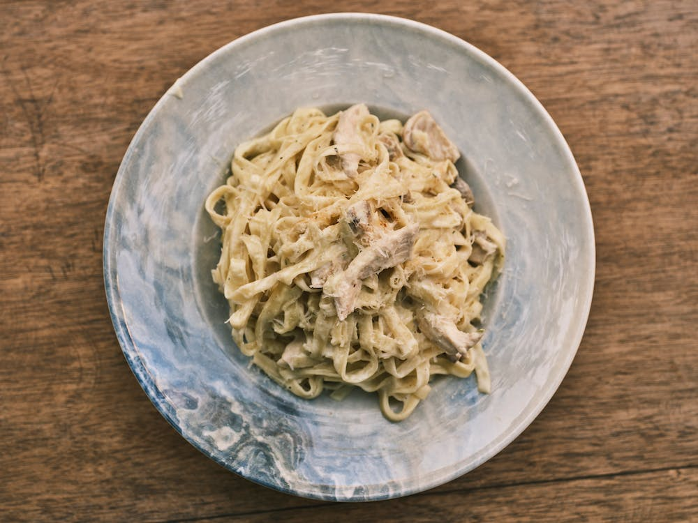

Creamy Alfredo

Simplest alredo you've ever made!
In this recipe we want to emphasize on left overs. Don't
throw them away! this dish will last you to next week just
keep the noodles and sauce seperate and combine as served.
Ingreditents
- Heavy cream
- Mozzarella & Parmesian
- Fettucini noodles
- Rotisserie Chicken (optional)
- Breadsticks (A must!!!)
Instructions
- Bring water to a boil with
pasta in. (cook 8-12mins)
- Pre-Heat oven to 400.
- shred rotisserie chicken.
- Simmer heavy cream with parm and
mozzarella added lightly. (continue
stirring)
- Bake breadsticks at 400 for 5mins.
- turn off burners and plate your noodles,
sauce, and bread with optional chicken
Enjoy!
return